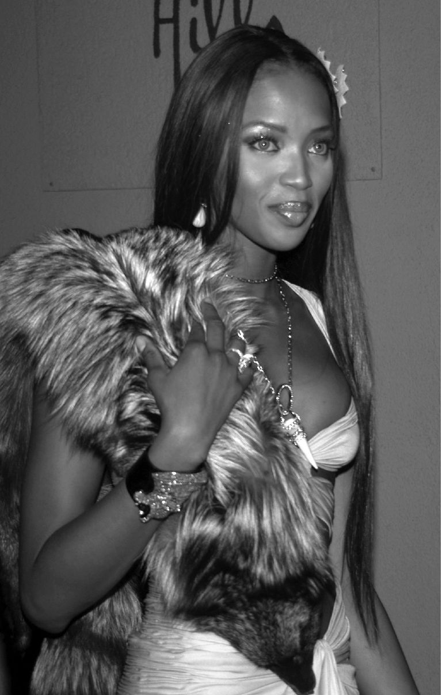
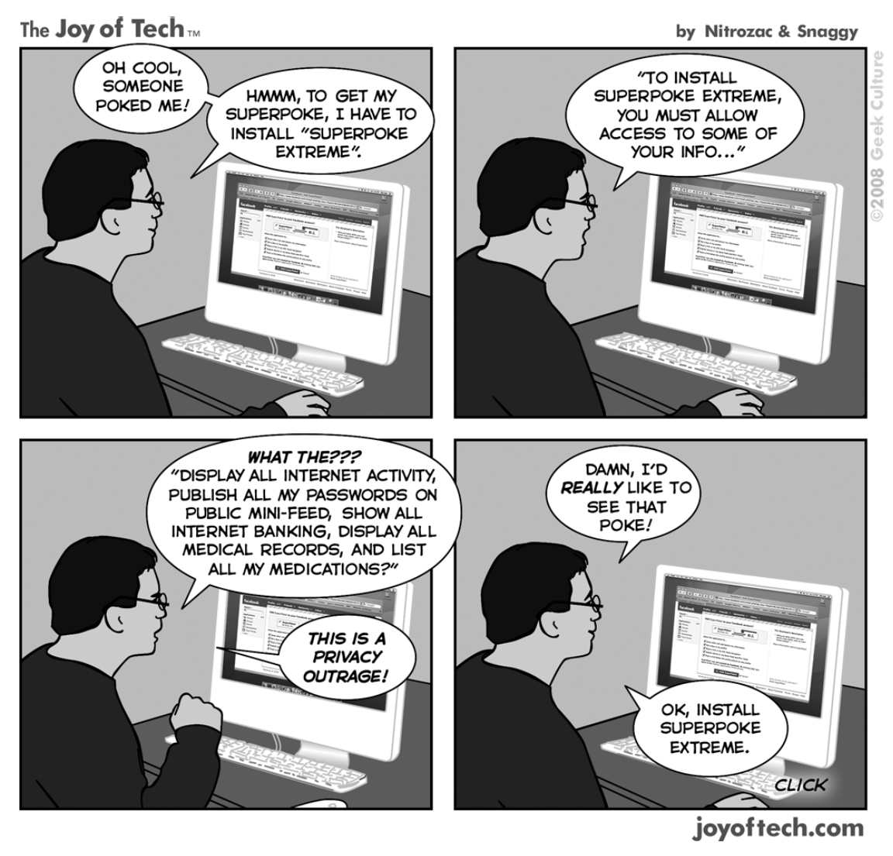

超级名模娜奥米·坎贝尔被拍到离开戒毒互助所的一次会议，英国小报《每日镜报》刊登了她的照片和声称她正在接受戒毒治疗的文章。她曾公开否认自己是瘾君子，并起诉该报要求赔偿损失。审判法院和上诉法院对她做出了不利的判决，法院认为，由于她向媒体撒谎称自己没有吸毒，因此媒体澄清事实是正当的。但她向上议院提出的上诉获得了胜诉，并因隐私遭到侵犯而获得赔偿。
迈克尔·道格拉斯和凯瑟琳·泽塔-琼斯的婚礼照片被偷拍，尽管所有的宾客都收到了明确通知，禁止“在婚礼或招待会上使用摄影或录像设备”。这对夫妇与《OK！》杂志社签订了独家出版合同，但该杂志社的竞争对手《Hello！》杂志社试图刊登这些图片。于是，明星夫妻找了律师并赢得了官司。
欧洲人权法院多次揭露了欧洲各国国内法对隐私权保护不足的问题。有一项裁决特别有启发性。摩纳哥的卡罗琳公主抱怨说，一些德国杂志社雇用的狗仔队拍下了她在各种日常活动中的照片，包括在餐馆庭院里吃饭、骑马、划独木舟、与孩子玩耍、购物、滑雪、亲吻男朋友、打网球、坐在海滩上等。一家德国法院做出对她有利的判决，因为这些照片虽然是在公开场合拍摄的，但是在她“寻求隐秘”时拍摄的。

图14 像超级名模娜奥米·坎贝尔这样的名人很容易被狗仔队穷追不舍
但是，尽管法院承认其中一些照片足够亲密，因此要受到保护（比如她和孩子在一起，或者和男朋友一起坐在饭馆庭院的僻静区的相片），但法院驳回了她对其他照片的诉求。她转而向欧洲法院申诉，该法院承认《欧洲人权公约》第8条适用，但力求在保护公主的私生活与《欧洲人权公约》第10条所保障的言论自由之间取得平衡。法院认定，拍摄和出版照片是对于保护个人权利和声誉具有特别重要意义的一个主题，因为它不涉及“思想”的传播，而是关于包含个人私人的，甚至是私密“信息”的形象的传播。而且，小报刊登的照片经常拍摄于一种骚扰的气氛中，这种气氛使得狗仔队的猎物产生一种强烈的侵扰感，甚至是迫害感。
法院认为，在保护私生活与言论自由之间取得平衡的关键因素是，所刊登的照片和文章对公众利益的辩论所做出的贡献。法院发现，公主的照片纯属私人性质，是在她不知情或不同意的情况下拍摄的，在某些情况下甚至是秘密拍摄的。这些照片对公众利益的争论没有做出任何贡献，因为她并没有参加任何官方活动，而且照片和文章只涉及她私生活细节。此外，虽然公众可能有权获得有关信息，包括在特殊情况下了解公众人物的私生活，但在本案中，他们没有这种权利。了解卡罗琳公主的下落或者她在私生活中的行为举止，即使是在那些不能总被描述为僻静之处，也没有任何正当利益。同样，法院认为，杂志刊登照片和文章可获得商业利益，但这些利益必须让步于申请人有效保护其私生活的权利。
出风头？
娱乐圈名人——电影明星、广播电视明星、流行音乐明星、体育明星和模特等被狗仔队视为可批评的对象。英国皇室成员，尤为引人注目且可悲的是威尔士王妃，长期以来一直受到媒体的折磨。
不断有人声称，公众人物丧失了他们的隐私权。这一论点通常基于以下的推理。首先，有人说名人喜欢在情况有利于自己的时候做宣传，但当情况不利时就会对宣传感到反感。人们认为，公众人物不可能两全其美。其次，有意见认为媒体有权“澄清事实”。因此，在娜奥米·坎贝尔的案件中，由于她隐瞒自己吸毒成瘾这一事实，上诉法院认定，媒体揭露真相是与公共利益有关的。
第一个论断被媒体提出来并不令人意外，它是一个俗语“常在河边走哪有不湿鞋”似是而非的应用。这将敲响保护大多数公众人物私生活的丧钟。不能因为名人追求宣传效应——这是获得名望的一个不可避免的特征——就剥夺他们保护自己的隐私不受公众关注的权利。
一个虚假的公共利益？
詹姆斯·格里芬，《论人权》，牛津大学出版社，2008年，第240-241页。
第二个论点也不完全具有说服力。假设一个名人是HIV病毒感染者或患有癌症。他或她否认自己是这些疾病的患者的正当欲求，就会被媒体“澄清事实”的权利消灭吗？事实果真如此吗？如果是这样，隐私保护就成了脆弱的芦苇。不管事实真伪如何，都不应阻止那些生活在公众视线中的人的合理期望。
但是，有怨气的不只是富人和名人。
普通百姓
佩克先生非常沮丧。有一天晚上，他在布伦特伍德大街上散步时，试图用菜刀割破自己的手腕，他没有意识到自己已经被布伦特伍德区政府安装的监控摄像机拍到。但是，监控录像视频并未显示他实际上是在割自己的手腕，操作员只对出现持刀者的画面有所警觉。警察接到通知后赶到现场，他们没收了刀，并向佩克提供了医疗救助，然后将他送到警察局。根据《精神健康法》，警察扣押了佩克。经医生检查和治疗后，佩克无罪释放，并被警察送回家。
几个月后，区政府公布了从监控录像中获得的两张照片，并配以一篇文章，标题为：“化解危险——闭路电视和警方之间的伙伴关系防止了潜在危险局面的出现”。这篇文章描述了上述事件，然而，佩克的脸没有打上马赛克。几天后，布伦特伍德周刊在其头版刊登了这一事件的照片，为一篇报道举例说明闭路电视的使用情况和好处，佩克的脸又没有被遮挡处理。随后，当地另一家报纸刊登了两篇类似的文章，以及一张从监控录像中截取的佩克的照片，并称潜在的危险局势已经得到解决，佩克已被无罪释放。一些读者从照片上认出了佩克。
然后，监控录像的片段被收录在一个当地的电视节目中，这个节目的观众人数一般能达到三十五万。这次，应政府的口头请求，佩克的身份已被模糊处理。一两个月后，佩克从邻居那里得知他被监控摄像机拍下来了，而且录像已经公布。他没有采取任何行动，因为他仍然患有严重的抑郁症。
监控录像的片段还被提供给BBC全国电视频道的系列节目《打击犯罪》的制作人，该节目观众数量平均为九百二十万人。区政府规定了若干条件，包括在录像片段中不能识别出任何人。然而，一集节目的预告片却显示了佩克没有打上马赛克的脸部。当朋友们告诉佩克他们在预告片里看到他时，佩克向区政府投诉。区政府与制片人取得了联系，制片人确认佩克的肖像已在主要节目中被遮挡处理。但当节目播出时，尽管对佩克的脸部做了模糊处理，佩克还是被朋友和家人认出了。
佩克向英国广播标准委员会和独立电视委员会（现均被英国通信管理局取代）投诉，声称他的隐私被无理侵犯并且还投诉了其他事宜。佩克的投诉成功了。但是，他向报刊投诉委员会就已刊出的文章提出异议，则没有下文。
佩克随后请求高等法院允许就区政府披露监控录像资料一事进行司法审查，而他的申请以及向上诉法院提出上诉的进一步请求均被驳回。因此，他向欧洲法院提出申诉。欧洲法院裁定，区政府公布监控录像的片段是对佩克私生活的过度干预，违反了第8条的规定。法院认为，对该条款中所表述的“私生活”一词更宽泛的解释应包括身份权和个人发展的权利。
仅仅因为这段录像是在公共街道上拍摄的，并不能说明它是一个公共场合，因为佩克既没有参加公共活动，也不是一个公众人物，而且当时是深夜。此外，由于区政府向媒体披露了这一录像，导致其观众数量远远超过了佩克可以合理预见的范围。正是媒体的披露程度侵犯了佩克根据第8条应享有的权利。法院的结论是，区政府本可以在披露录像之前征得佩克先生的同意，并且区政府本应掩盖录像和照片中佩克的脸部。
这个案件是一个重要的依据，即并不能仅仅因为一个人在公共场所，就使其行为被公开，除非在路人亲眼看见的情况下。正是各种各样的媒体进一步的披露，侵犯了佩克根据第8条应享有的权利。
入侵和披露
媒体对信息的追求往往需要使用侵入性的方式：欺骗、变焦镜头、隐蔽装置、对电话交谈或通信的拦截，以及第一章所描述的其他形式的监听和监视。现在有一种倾向，即把窥探新闻的记者所进行的侵入性行为与由此获得的信息的公布混为一谈，而把这两者分开是很重要的。
迪特曼诉《时代》周刊公司一案的判决就理智地采纳了这种立场。在该案中，两名《生活》杂志的记者欺骗原告，使原告允许他们进入他家里，于是他们在原告家中设置了隐蔽的监视装置来监视原告。原告是一个几乎没有受过教育的水暖工，他声称自己可以诊断和治疗身体疾病。由此产生的新闻报道确实让公众了解了一个有新闻价值的话题——无证行医，但法院不得不考虑记者在秘密新闻的采访技巧方面是否享有豁免权。经上诉，法院维持了有利于原告的其隐私受到侵犯的判决。在回应被告声称《宪法第一修正案》的保护范围不仅包括信息发布，还包括调查方式时，法院评论称，该修正案“从来没有被解释为赋予新闻记者在新闻采写过程中对侵权或犯罪行为享有豁免权”。
重要的是，在评估损害赔偿时，法院不仅考虑到侵入行为的性质和程度，而且也考虑到信息发布行为。法院指出：“《宪法第一修正案》没有规定保护新闻媒体精心策划的不当行为，（因此）事后发布信息的事实（可能会）导致增加对侵入行为的赔偿。”
不过，就《宪法第一修正案》而言，“收集信息的权利在逻辑上是先行的，而且实际上是行使（发布权）所必需的……除非该先行的权利得到承认，否则无法赋予出版权完整的意义”。普通法不给予媒体收集信息的一般特权。因此，法院正确地将侵入行为和披露行为这两个问题分开，根据由前者发展而来的普通法原则来评估被告新闻采写技术的合理性，并避免任何关于第一修正案的争论，因为这必然会涉及后者。
答案在于制定独立的标准，据此来评估何时可以正当地侵入个人的隐居生活。正如存在着一些标准，根据这些标准来判定何时可以为了公众利益而披露私人事实。
言论自由
我们现在都是信息发布者了。互联网为我们创造了前所未有的言论自由的机会。博客数量以每天十二万的速度增长。社交网络是社区的新形式；Facebook有大约三亿用户，MySpace约有一亿用户。然而，尽管有这些惊人的发展，核心问题仍然是不变的，即如何协调隐私权与言论自由？
电子时代仍然需要解决沃伦和布兰代斯的恳求（已在第三章中有过探讨），法律应当防止因私人信息被无偿公开发布而造成的痛苦。
在民主社会中，言论自由的正当理由是什么？这些理由往往是基于行使自由所产生的积极后果，或者是基于保护个人言论自由的权利。前者——结果论的论点通常借鉴了约翰·弥尔顿和约翰·斯图亚特·穆勒提出的言论自由的理由。后者——基于权利的论点认为，言论是个人自我实现权利的一个不可或缺的组成部分。

图15 披露个人信息通常令人难以抗拒
网络八卦
杰弗里·罗森，《多余的凝视：美国隐私的毁灭》，兰登书屋，2000年，第205页。
这些原则往往会被合并，甚至被混淆。因此，以托马斯·埃默森为例，他识别出以下四种主要理由（这些理由包括上述两种主张）：个人自我实现；获得真理；确保社会成员参与社会决策（包括政治决策）；提供维持社会稳定与社会变革之间平衡的手段。
另一方面，如第二章所述，隐私权的捍卫者几乎完全依赖基于权利的论点。但是，法律在多大程度上可以合法地限制损害个人隐私的言论，常被说成两种重要权利之间的较量：言论自由权与隐私权。但这可能只是似是而非的冲突。为什么呢？因为“在大多数情况下，隐私法和维护新闻自由的法律并不相互矛盾，相反，它们是相辅相成的，因为二者都是个人权利基本制度的重要特征”。
一种更好的路径？
一旦我们把注意力集中在隐私的本质上，隐私的迷雾就会散去。当我们认识到我们的核心关注点是保护个人信息时，这场辩论的真正性质就被揭示了。令人高兴的是（尽管很少有），在浩瀚文献的黑暗深处，一束束睿智之光出现了。例如，在对公开披露侵权行为进行详细讨论之后，一位作者总结道：
就连托马斯·埃默森也暗示，可能会有“另一种路径，在我看来更有成效”：
这些因素中，第一个因素是：
因此，有一些积极的迹象表明，寻求隐私与言论自由之间难以捉摸的平衡，使人们对传统路径产生了一些怀疑，这种路径在一种逻辑不自洽的隐私概念中没落。
谁的自由？
言论自由是保护说者的利益还是听者的利益？或者，更煞有介事的问题是，言论自由的正当理由是以个人为基础还是以社群为基础？
前者是以权利为基础的，主张个人自主、尊严、自我实现，以及行使言论自由保障或促进的其他价值的利益。后者是以社群为基础的，是结果主义或功利主义的。它利用民主理论或宣扬真理来支持言论自由，以鼓励不受限制地交流思想、传播信息和扩大参与自治的其他手段。
言论自由和隐私权往往被视为个人的权利或利益——有时与整个社会的权利或利益相提并论。而且，更麻烦的是，言论自由被视为一端，而隐私则被视为另一端，从而这两者的任何“平衡”都有问题！就个人利益而言，它们通常也有着相同的关切。的确，如上文所述，隐私权的社会功能与言论自由的社会功能难以区分。将两者都视为个人权利似乎是简化这一问题的一个重要步骤。
政策和原则
旨在保护受众言论自由的理论一般都是基于这种自由对社群的重要性而提出的政策论点。另一方面，那些促进发言者利益的论点通常是原则论点，它们将个人的自我实现置于社会利益之上。法学家罗纳德·德沃金曾建议，如果言论自由被视为维护发言者的权利，并作为一种原则存在，那么它就有可能得到更有力的保护。从广义上讲，隐私也是基于权利而不是基于目标存在的。如果这是正确的话，将至少有助于促进平衡实践中更大程度的均衡。
不幸的是，这个问题更为复杂。乍看之下，这一策略提供了一个合理的基础，从而不能说损害他人利益的发表行为促进了发言者或发表者自我利益的实现。披露一个超级名模是瘾君子的行为“实现”了谁的利益？谁可以说某些言论形式是否有助于实现这一目标？
而且，这一论点“未能将智力上的自我实现与其他欲望和需求区分开来，因而未能支持一种明确的言论自由原则”。它也是以自由传播思想而非信息的原则为基础的，这就降低了其在当前情况下的效用。最令人尴尬的是，这种观点很难用来维护新闻自由，因为新闻自由似乎完全建立在社会利益的基础上，而非个体的记者、编辑或出版商的利益。
说者的动机是什么？如果说报纸编辑和经营者可能对利润有一点兴趣，这并不过分虚伪。而且，正如埃里克·巴伦特所言，“将以盈利为目的的言论排除在外，如果仔细考察这种动机，将没有什么不受监管”。观众也不一定关心；好的读物就是好的读物，不管作者是受贪婪驱动还是受教化使然。
事实真相
约翰·斯图亚特·穆勒著名的真相论证是基于这样的思想：任何对言论的压制都是一种“无错臆断”，只有通过无限制地传播思想才能揭示真相。但从逻辑上讲，这将阻止任何削弱发言权（至少是说出真相的权利）的行为。除了穆勒关于存在客观“真相”的令人怀疑的假设和他对理性支配地位的信心之外，他的理论使得关于个人信息披露（以及其他几种伤害他人的言论形式）的法律规制变得极其难以证成。这种理论认为，言论自由是一种社会善，因为它是帮助人们增进知识和发现真相的最佳过程，其逻辑起点是，通过考虑正反两方面的所有事实和论点，得出最明智和理性的判断。而且，根据埃默森的说法，这种自由的思想市场应该存在，不管新的观点看起来是多么有害或虚假，“因为没有办法在压制虚假的时候不压制真实”。
但是，从真相出发的论点真的与保护隐私有关吗？弗雷德里克·肖尔质疑真相是否真的是终极的、非工具性的，它是否并未获得诸如幸福或尊严这样的“更深层次的善”的地位？如果真相是工具性的，那么更多的真相是否会因此加强更深层次的善，这是一个事实问题，而不是从定义中得出的必然的逻辑确定性。对肖尔而言，真相的论证是一种“知识的论证”，一种其价值在于让人们相信事情实际上是真实的论证。
真相与谎言
约翰·弥尔顿，《论出版自由》（1644），麦克米伦出版社，1915年。
民主
言论自由在促进和维护民主自治方面发挥着非常重要的作用。正如美国政治理论家亚历山大·米克尔约翰所说的，这是从真相出发的论点的延伸：
然而，正如从真相出发的论点一样，我们必须质疑，揭露诸如一个人的性倾向等私密性事实，是如何促进或提升自治的？真是“言论”吗？
在某些情况下，这类信息可能与自治有关：例如，如果通过民选政府行事的人认为某一行动具有足够的反社会性质，构成刑事犯罪，那么逮捕和惩罚罪犯就符合自治利益。同样，如果一个人担任公职，并因此实际上代表人民行事，代表并执行人民的政治观点，那么与他或她适合履行这一职能直接相关的任何活动，都是社会正当的关注点。可悲的是，有太多的政客鼓吹“家庭价值观”，其本人却被曝光为通奸者或更坏的人。在这些例子中，公共利益的检验能够支持言论自由。从民主出发的论点不应该被用来证明隐私领域的言论自由是不受限制的。
新闻自由
从民主出发的论争在这里正如火如荼。对弥尔顿和布莱克斯通来说，言论自由最险恶的威胁来自事先对新闻界的限制。18世纪的法学家威廉·布莱克斯通爵士宣称：
然而，无论新闻界的概念还是新闻自由的界限，在今天来说，都要宽泛得多。因此，“新闻界”通常不限于报纸和期刊，而包括范围更广的出版媒体：电视、广播和互联网。新闻自由的范围也不限于禁止“事先限制”。
对言论自由的政治辩护是从真相出发的论点的适用。我们应该记得穆勒的第二个假设是“无错臆断”，它为我们有信心相信我们所认为的真实的东西实际上是真实的指明了条件。这个论点认为，实现这一目标的最安全的方法是给予个人想法交锋的自由：让这些想法面临矛盾和驳斥。对这种自由的干涉会降低我们获得理性信念的能力。
这是一个强有力的想法，即使它似乎是基于一个理想化的政治进程模式，在这个模式中，民众积极参与政府的政治进程。新闻自由确实有可能使民众产生这种意识并促进其行使。
诉诸真相的民主的论点，为言论自由确立了独立的基础，而基于说者利益的论点则没有。但新闻界发表的很多东西，即使是最慷慨的想象，也与这些崇高的追求毫不相干。这是否表明他们没有资格享受特殊待遇？支持对新闻界给予特殊待遇的论据，往往没有司法依据。显然，如果与《每日镜报》在娜奥米·坎贝尔一案中的情况不同，新闻界冒犯了礼仪，而不是违反了法律，则可以提出更有力的理由。因此，可以用这一论点来说明发表某一特定报告的政治进程的重要性。可以说，关于政府部长、官员、政治家，甚至是皇室成员的私生活的报告，都值得特别对待。在这方面，引起关注的焦点是信息的性质，而不是其传播的媒介。这种方式并不区分是在新闻界还是在酒馆里行使自由。它还有一个好处，就是避免了界定“新闻界”的问题。
《宪法第一修正案》
在美国，言论自由的问题是在《宪法第一修正案》禁令的背景下进行辩论的，该禁令规定：“国会不得制定任何法律……限制言论自由或新闻自由。”美国法院和评论者提出了一些关于言论自由的理论，这些理论既有以权利为基础的，也有结果论的，这些理论试图说明以各种形式行使表达自由的情况。不过，尽管将努力调和隐私权和言论自由所遇到的问题视为一个单独的问题是人为的，但美国的法律似乎确实形成了隐私权/言论自由理论的框架。
特别是，存在着一种对《宪法第一修正案》进行有目的解释的倾向。这就提出了这样的问题：什么样的言论或出版形式由于其对政治民主的运行有贡献而应当受到保护？这种思路被用于将公众人物和普通个人加以区分的若干裁决，其后果各有不同。实际上，最高法院将著名诽谤案《纽约时报》诉沙利文案中采用的原则用于时代公司诉希尔的隐私权案（见下文）。在前一案的判决中，法院明确表达了自己的观点：
在这种方式中，《宪法第一修正案》的主要目的是保护所有公民了解政治问题的权利，以使他们能够有效地参与民主政府的运作。这一方案为受到无正当理由曝光的个人采取行动提供了相当大的余地。然而，在实践中，往往是那些经常出现在公众视线中的人——正是出于这个原因——吸引了小报的注意。因此，这种理论需要回答的难题是，这些公众人物在多大程度上有权得到涉及其个人生活各个方面的保护。而这反过来又涉及一个微妙的调查，即在推动政治辩论的过程中，公众人物生活中的哪些特征可以被合法地曝光。他的性生活？她的健康状况？他们的财务状况？
尽管这一理论试图区分自愿和非自愿的公众人物，但它的应用，除了作为言论自由本身存在的一般依据外，对涉及不必要曝光的个案中各自的权利和义务，未能提供确定的指导。如果不试图清楚界定各种信息，而这些信息是所有人表面上可能期望得到保护的（即使这种保护随后被公共利益的考量所压倒），那么承认个人对限制信息传播享有利益的核心目的之一——信任、坦诚和信心——就被削弱了。
平衡利益冲突
是否有可能提出一种合乎逻辑的言论自由理论，这种理论既足够广泛，能够反映行使自由的复杂性，又足够明确，能够解释其各种应用？从民主出发的论点得到了比穆勒或以自治为基础的理论更多的支持，但所有这些理论充其量只能在媒体对公开披露个人信息进行合法管制方面提供最一般性的指导。
以利益为基础的理论具体规定了信息披露所涉当事人的特殊利益，这种理论引起了许多困难（与以利益为基础的隐私论述并无不同）。此外，尽管对诸如公布私人事实所涉及的“人格”利益与受到诽谤性出版物影响的“名誉”利益或受到违反保密义务影响的“商业”利益进行区分，是有用的，但这种方式未能解释在面对各种相互冲突的言论自由的要求时，哪些信息种类需要得到保护。
美国最高法院在调解这两种利益时，采用了一种“平衡”程序，将言论自由的利益与诸如国家安全、公共秩序等其他利益进行权衡。如果这些利益被认为是“令人信服的”或“实质性的”，或有明显的现实的危险，即该言论会对公共利益造成重大损害，法院便会支持对言论自由进行限制。
限制的动力
埃默森用这个短语来描述这样一个主张，即言论自由中的公共利益必须符合一种“更全面的社会价值观和社会目标方案”。到目前为止，我已经谈到了某些言论自由的理由是不具有适用性的；我允许隐私权毫发无损地逃脱。如果这两种价值之间存在真正的冲突，如何保护隐私？或者换句话说，为什么言论自由要服从个人信息的保护呢？
在什么情况下，对言论自由的绝对保护可能会受到限制？埃默森提出三种情况。第一种情况是，损害对个人而言是直接和特定的，而不是与他人共同遭受损害。第二种情况是，当利益是私密的和私人的利益时：这种利益包括一个隐私领域，国家和其他个人都应被排除在该领域之外。第三种情况是，社会是否将保护个人利益的责任留给个人，例如承认个人有法律上的诉因。
在前两种情况下，损害可能是直接的且不可补救的。此外，如果个人有责任证明自己的案由，那么国家的资源就不太可能被整合成一个限制言论自由的连贯机制。埃默森认为：“只要隐私的利益是真实的，追偿的条件是清楚界定的，救济办法是留待个人诉讼的，则极不可能过分偏重于限制言论。”
即使在《宪法第一修正案》的背景下，埃默森的方法也是有说服力的。而在保障言论自由方面，英国法律在宪法中的沉默也是如此。一位高级法官这样说：
然而，法院承认，“隐私权可能是言论自由的一个合法例外”。其他法官也承认，在一些特殊情况下，打算出版的报刊显然是非法的，会对无辜的人造成严重伤害，或严重妨碍司法公正。另一位法官则宣称，“布莱克斯通非常担心政府干预媒体。布莱克斯通的时代与默多克先生的时代无关”。
公共利益
什么时候才是符合公共利益的？法院一直在努力制定合理的标准，以此来做出这一有争议的判决。似乎与之相关的考虑事项如下：向谁提供信息？受害者是公众人物吗？他或她是在公共场所吗？这些信息是否属于公共领域？受害人是否同意发布信息？这些信息是如何获得的？揭露受害者的身份是否必要？这种侵犯行为严重吗？出版商披露这些信息的动机是什么？
在美国，出版商只需提出基于公共利益或新闻价值的辩护意见，就可以推翻针对媒体无理公布私人事实的防范措施。因此，在席德斯案 [8] 中，法院宣称：“在某一时刻，公众对获得信息的兴趣将凌驾于个人对隐私的渴望之上。”《第二次侵权法重述》将这种特权定义为扩大到“公众合法关注”的信息，这一结论是通过权衡公众知情权与个人私密事实不受公众关注的权利之间相互冲突的利益而得出的。这可以由法官在法律上或更多情况下由陪审团作为事实问题来决定。《第二次侵权法重述》中的检验内容如下：
随着法院越来越意识到审查准确报道所涉及的言论自由问题，具有新闻价值的信息种类也在稳步增加。性事——可以理解——占据了主导地位。两个加利福尼亚的案例就说明了这一点。第一个案例中，一位前海军陆战队队员挫败了暗杀福特总统的企图，从而引起了媒体对他的极大兴趣。《旧金山纪事报》透露，西普勒是同性恋社群的一位杰出成员，这的确是事实，对此，他却以公开披露私人事实为由提起侵权诉讼，因为他声称自己一直对自己的亲属隐瞒其同性恋事实。法院以两个理由驳回了他的诉讼。第一，信息已经属于公共领域；第二，法院认为，所披露的事实是有新闻价值的，因为这一揭露行为是希望反对把同性恋者说成是“胆小、软弱和怯懦”的思维陈规，并讨论总统的潜在偏见（有一份报纸指出，总统在感谢西普勒时沉默是因为西普勒是同性恋）。
在另一起案件中，报纸上的一篇文章透露，加利福尼亚州一所大学的第一位女性的学生会主席迪亚斯是变性人。法院认为，其变性是一个私人事实，而且，尽管她卷入了一场公开的争议（因为她指控学校滥用学生资金），但新闻披露的事实与这一问题无关，因此不具有报道价值。法院强调，第一修正案保护的目的是，“让公众知情，以便他们能够就对自治的民众来说至关重要的事项做出明智的决策”。法院进一步解释说：“她是变性人这一事实并不影响其诚实和判断力。她是学生会的第一位女主席，这一事实本身也不能保证她的整个私生活都要接受公众的监察。”
如何调和这两个判决？答案可能就在迪亚斯文章的主旨中。该报认为，该报道旨在描述“妇女在社会中不断变化的角色”，但从文章的语气来看，作者的目的很显然止于“赤裸裸的曝光”。这两个判决的一个重要特点是，这些文章旨在描述不同的生活方式。因此，可以说，如果关于迪亚斯的文章试图认真地描述妇女在社会中的角色不断变化，法院可能就会抵制要求对其进行审查的呼声。
名人
我们的星球是追星的星球。哪怕是一个名人的最微不足道的流言蜚语似乎也能激起人们极大的兴趣和迷恋。报摊上摆满了各种杂志，不断提供这些转瞬即逝、通常是空洞无物的事实。明星的身份会消灭隐私吗？尽管《美国法律重述》评论说，“可能会有一些生活中私密的细节，比如性关系，这些私密的细节即使是女演员也有权不公开”，但安-马格瑞特诉上流社会杂志公司一案的裁决表明，法院还没有接受这种慎重的态度。在该案中，这位女演员因自己的裸照曝光而寻求法律救济，但被法院驳回。部分原因是这张照片是“一个被许多电影观众幻想的女人”，因此“许多人对这张照片非常感兴趣”。
人们常常声称，法院只是接受新闻界关于什么是有新闻价值的判断。一位作者认为，“遵从新闻界的判断实际上可能是对调查新闻价值的适当而有原则的回应”，但这忽略了主题存在争议的原因。她评述道，出版商和广播公司的生存取决于它们能否提供公众将购买的产品。她还认为，“大部分人希望了解些东西以应对他们生活的社会”，而市场竞争会导致报纸产生出“对这一点的反应”。
公共利益的概念很容易掩盖新闻界的商业动机。更糟糕的是，它伪装成消费者选择的民主实践：我们得到了我们应得的轰动效应。这两种形式的见利忘义的小报忽视了那些碰巧成为公众人物的人所面临的后果，因为他们非常不幸地被抛入了公众视线。
一种道德观的测试
要评估什么是“高度冒犯性”，美国法院已经发展出所谓的“道德观测试”。因此，在梅尔文诉里德案中，一部名为《红色和服》的电影揭露了原告过去做过妓女并在一起耸人听闻的谋杀案审判中是被告的事实，这部电影就是以这些事件为基础的。在她被宣告无罪后的八年里，她被“体面的社会”所接纳，并且结婚，加入了新的朋友圈，这些朋友对她的过去一无所知。她因被告的真实披露行为导致其隐私受到侵犯而提起了诉讼，并得到了加利福尼亚法院的支持（该法院之前还未承认过侵犯隐私权的诉讼）。
另一方面，在席德斯诉F.-R.出版公司一案中，原告之前是一名神童，十一岁时在哈佛大学教授数学，后来成为一名隐士，并致力于研究奥卡马克米塞特印第安人和收集有轨电车换乘票。《纽约客》杂志发了一篇文章：“他们现在在哪里？愚人节玩笑”，该文由詹姆斯·瑟伯用笔名发表。关于席德斯的身体特征和习惯的细节，他住在哪间单人房，以及他目前的活动都被披露了。该杂志的文章承认，席德斯曾告诉追踪采访他的记者，他生活在曝光的恐惧中，并且一旦他的雇主或同事得知他的过去，他就会换工作。纽约地方法院驳回了他的侵犯隐私权的诉讼，理由是法院认为，“对于报纸或杂志发表正确描述一个人的生活或行为的文章”，它找不到“支持侵犯了‘隐私权’的裁决……除非是在反常的情况下，这种情况不存在于正在审讯中的本案”。在上诉中，第二巡回法院维持了驳回隐私权诉讼的判决，但似乎是基于对该篇报道的冒犯性与原告的公私特点的平衡而做出的决定。
然而，梅尔文和席德斯都没有适当地试图考虑所披露的信息在多大程度上是“私人的”。“社区习俗”、“新闻价值”和出版物的“冒犯性”等含糊不清的概念，使这些和其他许多关于“公开披露”的裁决在一个具有相当重要的宪法意义的领域毫无帮助。最高法院在涉及影响原告隐私权的出版物方面划定《宪法第一修正案》的界限，也是如此。例如，在时代公司诉希尔案中，法院认为，原告侵犯隐私权的诉讼败诉，因为他（和他的家人）是一份基本上虚假报告的主角。被告发表了一篇文章，描述了一部改编自小说的新剧本，小说虚构了原告及其家人在家中被一群越狱囚犯挟持为人质时所遭受的苦难。
最高法院采用了它对诽谤所适用的检验标准，并以多数票认为，除非有实际恶意的证据（即被告明知故犯地发表了不真实的报道），否则诉讼就会败诉。如果出版物有新闻价值，仅凭虚假并不能剥夺被告受《宪法第一修正案》保护的权利。而且，由于“与实际事件相关的新剧本的开演是一个公共利益问题”，原告因为无法表明恶意而败诉。然而，这个裁决似乎并不真正涉及公开披露私人信息问题——不管这是不是一场真正的诽谤诉讼！
未来
世上没有金羊毛存在。如果明天在任何一个地方颁布一项全面的隐私法令，都会给司法机构带来新的问题，即在司法上对受害者的权利进行司法解释，使其免受不请自来的对其私生活的侵扰。如果法院采取普通法的个案审查的保护路径，这些困难也不会减少。新闻界将继续每天接受考验——或许更集中思考关于报道是否符合“公共利益”的问题。
对公正平衡的追求永远不会结束。关键的问题是，像通常情况那样，个人利益是否要在人为的公共利益的祭坛上被牺牲？对不想要的公开披露进行法定甚至进行非法检查的反对者，喜欢把对受害者的关注描述为过时或大惊小怪。这与新闻界对真相的强烈追求是有区别的。当然，在许多情况下，报纸和所有商业机构一样，受其股东利益的影响，股东对报纸所刊载的内容可能没有对其资产负债表上所显示的内容那么关心。由于新闻界经常承认它应该抵制迟钝地披露私人事实的做法，因此它几乎不可能把这种担心说成是伪善的或吹毛求疵的。
隐私权的拥护者很可能包括言论自由的敌人，但是，与认为主张言论自由的人包括贪得无厌的报纸经营者的论点比起来，这并不是一个更合理的反对理由。然而，永远不能低估新闻界游说团体的力量。有多少职业生涯岌岌可危的政客，希望通过限制报道所谓的“桃色新闻”而招致小报的敌意呢？媒体总爱谴责以公共利益的名义公开私生活，但这同时不可避免地关闭了反对立法的队伍。不幸的是，当大多数小报宣扬家庭价值观时，他们往往很少关心或尊重受害者的家人。